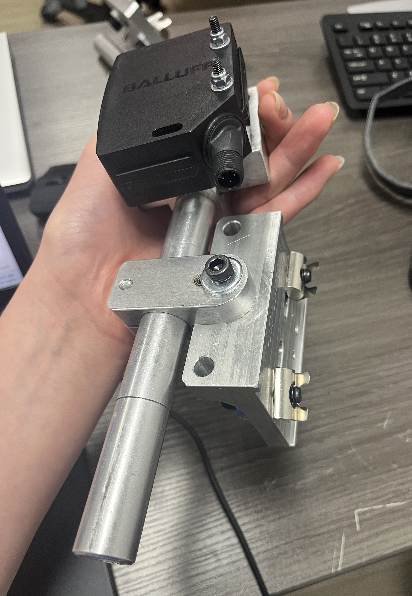
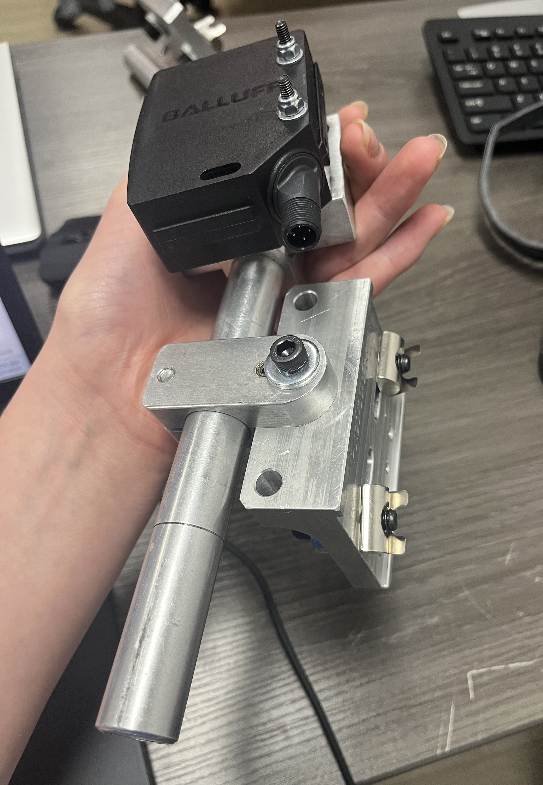

Foam Roller Mechanism – Magna International
Designed, 3D printed, and assembled a custom foam roller mechanism for an injection molding robot upgrade at Magna. Enhanced process reliability and improved material handling efficiency.
Brake Pedal System – Midnight Sun Solar Car Team

Designed a Hall-effect sensor brake pedal system in SolidWorks, resolving ergonomic and structural issues from prior iterations. Validated design using FEA and integrated into MS16 solar car.
Pudding Preparation Robot
Developed a fully functional automated system for preparing puddings, integrating mechanical design, 3D printing, and embedded controls with 8 DC motors and a variety of sensors.
Obstacle Course Robot – CREATE Design Challenge
Built an autonomous rover capable of avoiding obstacles and navigating uneven terrain. Outperformed over 20 competing teams at UofT's CREATE Engineering Design Challenge.
Atari Punk Console Synthesizer Circuit
Built an Atari Punk Console with 4 potentiometers to control waveform output.
Maze Navigating Robot

Created a robot with custom bumper sensors and navigation algorithms in C, achieving high success navigating dynamically changing mazes.
Simulated Traffic Light System
Programmed, wired, and assembled a traffic light system prototype, integrating sensors and LEDs to simulate realistic behavior.
Custom Laser Mounts – Magna International
 

Designed, machined, and assembled custom laser mounts for a production line, ensuring accurate positioning and improved inspection reliability.
Keychain CAD Assembly
Created a detailed SolidWorks keychain assembly, demonstrating design intent, dimensioning, and rendering skills.